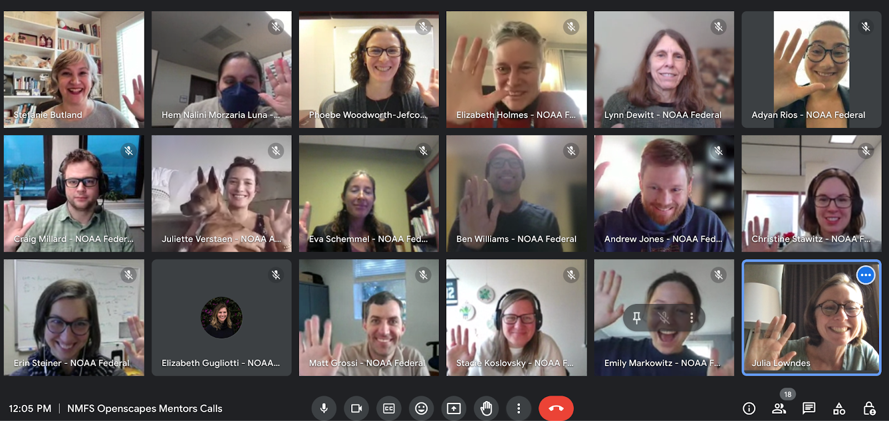

NOAA Fisheries invests in Open Science Mentorship
Elizabeth Eli Holmes (NWFSC) ![]()
Em Markowitz (AFSC)
Molly Stevens (SEFSC)
Phoebe Woodworth-Jefcoats (PIFSC)
Craig Millard (AKRO)
Megsie Siple (AFSC)
Andy Jones (NEFSC)
Julie Rose (NEFSC)
Ana Vaz (SEFSC)
John Holzman (SEFSC)
Erin Steiner (NWFSC)
Matt Grossi (SEFSC)
Kathryn Doering (OST)
Adyan Rios (SEFSC)
Amanda Bradford (PIFSC)
Stefanie Butland (Openscapes)
Julie Lowndes (Openscapes)
Introduction
Open science is a vital cultural currency of science collaboration at NOAA Fisheries. Following a nationwide surge in open science training across the agency and the field of ocean science, NOAA Fisheries staff are taking the opportunity to bring more of their peers into the fold. In fall 2023, the NOAA Fisheries Openscapes Mentors Community, composed of 43 federal employees and affiliate staff, developed open science and open data mentorship skills. Members from all six regional science centers (Northeast (NEFSC), Alaska (AFSC), Pacific Islands (PIFSC), Southeast (SEFSC), Southwest (SWFSC), Northwest (NWFSC), several regional offices (West Coast (WCR), Pacific Islands (PIRO), Alaska (AKRO), and the Office of Science and Technology (OST) participated. This community serves the NOAA Fisheries Openscapes program, which allows for skill development at multiple levels and emphasizes the importance of collaboration, peer-to-peer learning, psychological safety, leadership skills, data management, data science workflow modernization, and modern project management approaches. As part of the NOAA Fisheries Data Strategy, this program is supported through the "Fully Enable Open Science" initiative in the NOAA Fisheries Modernization Strategy.

“I want to share the value of collaboration between Science and Regional offices – particularly addressing data sets provided to centers to improve the goals of open science and reproducibility of results. Also want to thank Alaska Fisheries Science Center (AFSC) for introducing me to some of the people behind the data interfaces. A component of our work could follow the path to GitHub Enterprise and the Science Center’s lead.” —Craig Millard, IT Specialist at the Alaska Regional Office; Juneau, AK
The Openscapes Mentors framework is a community-of-practice initiative focused on building and maintaining data-science workflows. At its core, Openscapes supports a highly organized and systematic approach to skillbuilding, and workflow modernization, and community around open, reproducible, and inclusive science (Lowndes et al. 2019, Robinson & Lowndes 2022, Fredston & Lowndes 2024). The NOAA Fisheries Openscapes Mentors program was co-designed with NOAA Fisheries staff and is modeled from the NASA Openscapes Mentors Framework. As such, sessions and skill building were designed to be directly aligned with participants' work responsibilities. The three objectives for the NOAA Fisheries Mentors program were to:
develop a NOAA Fisheries mentor community;
empower NOAA Fisheries researchers with modern Open Science skills; and
amplify NOAA Fisheries research and leadership in global Climate and Open Science movements.
The NOAA Fisheries Openscapes Mentors Community met from October-December 2023 in 1.5 hour bi-weekly meetings to cowork on activities across all of NOAA Fisheries, identify the key barriers hindering data and workflow modernization by staff, and collaborate on solutions to common problems that will save time across the agency. In spring 2024, these mentors will support three cohorts, each with 40 other staff from across NOAA Fisheries through the Openscapes Champions program. Local mentor teams will be critical in helping each science center and regional office achieve data modernization goals by ensuring that local needs are prioritized and local barriers to data and workflow modernization are addressed. Many of the participants in the mentor community had previously participated in Openscapes Champions Program cohorts in prior years and were able to use those experiences and perspectives in building their foundations as mentors.
Openscapes participation is just the beginning – it aims to help start NOAA Fisheries staff down the path of open science. The NOAA Fisheries Mentors Community reflects a large range of technical ability and training experience. Participants were united by their enthusiasm for the cause, strong communication and organization skills, and deep interest in data science teaching, mentoring, and leadership. This Mentors Community will grow rapidly in the next two years to include those who could not participate in 2023 and those new to the program. As the community grows in numbers, mentor interconnectedness will grow in parallel, fostering further trust, collegiality, and synergies among mentors, new and old.
Growing a mentors community
We started as a grass-roots mentors community in 2021, and together have coordinated and co-led 10 Openscapes Champions cohorts (like those held at AFSC, and across other NOAA Fisheries) to support over 400 staff with open data science skills, building connections across NOAA Fisheries from 2021 to 2022. These Openscapes Champions cohorts provided the foundation for participants to form collaborative working groups. For example, participants from the NWFSC, AFSC, and OST Openscapes Champions cohorts formed the NMFS GitHub Governance Team (GGT) in early 2023 in response to the recognition of the explosive growth and importance of GitHub for reproducible science and for documenting work involving data and code. The early GGT organizers recognized the importance of a new governance structure that involved both the end-user scientists and IT. The Openscapes Champions program was also the inspiration and motivation for the creation of the NMFS R User Group, which now has over 200 members and runs both an active Google Space and monthly webinars. The NMFS R User Group also maintains a calendar of free R trainings from across the broader R community. Members from these cohorts also joined efforts to create The NMFS Open Science Resource Book, where they share documentation, resources, and guidance. This includes automated NOAA Fisheries report templates in Quarto and RMarkdown, 508 compliance best practices, and GitHub guidance and project management across examples from across the agency.
In fall 2023, we grew as a community and focused on developing teaching, facilitation, and mentoring skills together. We learned coaching skills, which provided a new way to give and receive feedback. We participated in sessions dedicated to active listening, experiential learning, and designing for learners (protip: we are all learners)!
“The skills we learned as Mentors can be applied to ongoing work and in the workplace without the need to do a training-specific project: in my experience, this aspect is unique to Openscapes. For example, I really valued the fresh perspective of coaching by asking open-ended constructive questions before (or instead of) giving feedback.” —Phoebe Woodworth-Jefcoats, Research Oceanographer at the Pacific Islands Fisheries Science Center; Honolulu, HI
The importance and impact of establishing a Mentors community was evident in topic-based “Seaside Chats”. Seaside Chats are supportive and psychologically safe spaces. All attendees co-facilitate the meeting and foster open discussions around problems and barriers. Everyone is encouraged to actively contribute to shared notes and report-out documents, rather than leaving facilitation and note-taking responsibilities to one person. During our fall mentor training period, seaside chats worked as follows: one mentor would propose a topic that was important to them and add a seaside chat time to our shared calendar. Mentors from other centers or offices, who had never met before, would join the scheduled session. Despite the distance and barriers, participants easily recognized common challenges, asked questions, shared support solutions, and were able to generalize lessons learned for themselves and others. Between talking, adding to the shared notes, or offering +1’s (meaning “I agree” or “me, too”) in the meeting’s chat, participants learned and practiced several different strategies for connecting with others. During Seaside Chats mentors connected around topics like data visualization, data storage, documentation, and hybrid work environments. But they also connected around difficult topics for which there are no easy solutions, like overcoming frustrating administrative or technical barriers or situations where staff in different regions or offices face very different access to tools essential for reproducible science and data.
Despite their organic nature, the connections and discussion across centers and offices can quickly catalyze solutions. For example, through the Seaside Chats, one AKRO staff member was able to learn about and leverage AFSC’s modern cloud tools including GitHub, Python, R, and storage buckets for large data sets. Seaside Chat members recognized new opportunities to consolidate the tools currently on-premise at the regional level to focus on providing more transparent and open access to specific data sets. This collaboration could lead to reduced support cost for tools that are presently maintained on-premise, such as custom virtual machines. Another direct outcome of the Seaside Chats during the fall mentor session was the development and implementation of the standard operating procedures (SOP) for GitHub Enterprise Cloud at the NWFSC. Discussions about barriers to open science adoption at NWFSC, identified that administrative roadblocks were creating a barrier to implementing a system that will be essential to successful open and reproducible science at the NWFSC. By discussing the issues with the mentor group, steps to move forward were identified and the SOP development was ‘unstuck’, began moving steadily forward, and was signed shortly after the fall session.
What’s next: upskilling and tackling common needs
We will continue learning and supporting each other as a Mentors community, while we also support our colleagues in developing open data science skills. We will be leading three Champions Cohorts in spring 2024, as well as continuing progress on issues identified during our Seaside Chats. In 2023, NOAA Fisheries Mentors began connecting with Openscapes peers from other agencies and institutions, including NASA, EPA, Fred Hutch, and Pathways to Open Science. Together we developed coaching skills that make us better open data science mentors and co-authored a preprint entitled Shifting institutional culture to develop climate solutions with Open Science, now in peer-review. At the Earth Science Information Partners July 2023 meeting, NMFS Openscapes spearheaded a session dedicated to Open Science and Open Data at NOAA Fisheries. NMFS and NASA Openscapers met in person at the ESIP meeting and later meet again in a larger virtual meeting to learn about the NASA experience with the Openscapes Mentors Framework and to learn from each other. In 2024, we will continue these connections with our Openscapes Mentors peers in other agencies and offices and expand our open science work together.
Citation
@online{eli_holmes_(nwfsc)2024,
author = {Eli Holmes (NWFSC), Elizabeth and Markowitz (AFSC), Em and
Stevens (SEFSC), Molly and Woodworth-Jefcoats (PIFSC), Phoebe and
Millard (AKRO), Craig and Siple (AFSC), Megsie and Jones (NEFSC),
Andy and Rose (NEFSC), Julie and Vaz (SEFSC), Ana and Holzman
(SEFSC), John and Steiner (NWFSC), Erin and Grossi (SEFSC), Matt and
Doering (OST), Kathryn and Rios (SEFSC), Adyan and Bradford (PIFSC),
Amanda and Butland (Openscapes), Stefanie and Lowndes (Openscapes),
Julie},
title = {NOAA {Fisheries} Invests in {Open} {Science} {Mentorship}},
date = {2024-01-24},
url = {https://openscapes.org/blog/2024-01-24-nmfs-mentors/},
langid = {en}
}